|
|
|
|
|Instituto Tecnológico de Costa Rica|Escuela de Matemática| M. Sc. Geovanni Figueroa M. |
|
|
Solución de una ecuación diferencial
para toda 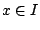. Es decir, una solución, es una función
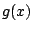 definida en algún intervalo
Ejemplo
Derivando la función
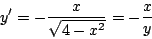
Ejemplo
Derivando la función
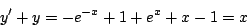
Ejemplo
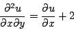
en todo 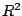. Calculando las derivadas parciales
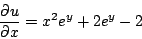
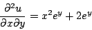
Al sustituir obtenemos una igualdad
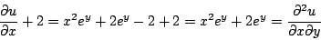
Recuerde que no toda ecuación diferencial que se nos ocurra tiene solución, por ejemplo, para la ecuación diferencial
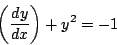
no existe una función real derivable que la satisfaga, pues el
lado derecho es negativo y el lado izquierdo positivo. De aquí
en adelante vamos a suponer que las soluciones que buscamos son
reales y que el intervalo
Ejemplo
Derivando implícitamente con respecto a
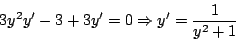
Derivando implícitamente de nuevo, para calcular la segunda derivada
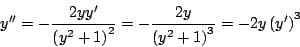
Hasta este momento hemos visto ejemplos en los cuales la solucióón esta dada en formas explícita o implícita. En los siguientes ejemplos se muestran situaciones un tanto diferentes.
Ejemplo
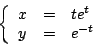
es solución de la ecuación diferencial 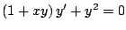.
Calculemos
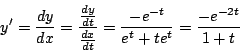
Sustituyendo
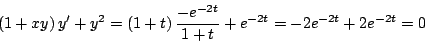
Ejemplo La función
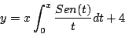
es solución de la ecuación diferencial 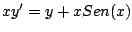.
Observe que para calcular
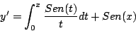
Sustituyendo
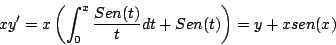
Si la solución de una ecuación diferencial de orden
Ejemplo La familia de curvas 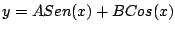 es la solución general de la ecuación diferencial 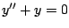, mientras que 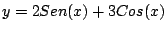 y 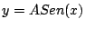 son soluciones particulares.
Algunas veces, a una solución de una ecuación diferencial se
le llama integral de la ecuación y a su gráfica
curva integral o curva solución.
Como la solución general de una ecuación diferencial de orden
Ejemplo La familia de parábolas 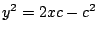 es la solución general de la ecuación diferencial 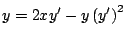. Derivando implícitamente
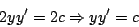
Sustituyendo
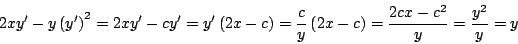
En la figura 2 se muestran algunas curvas solución.
Figura 2
Subsecciones |